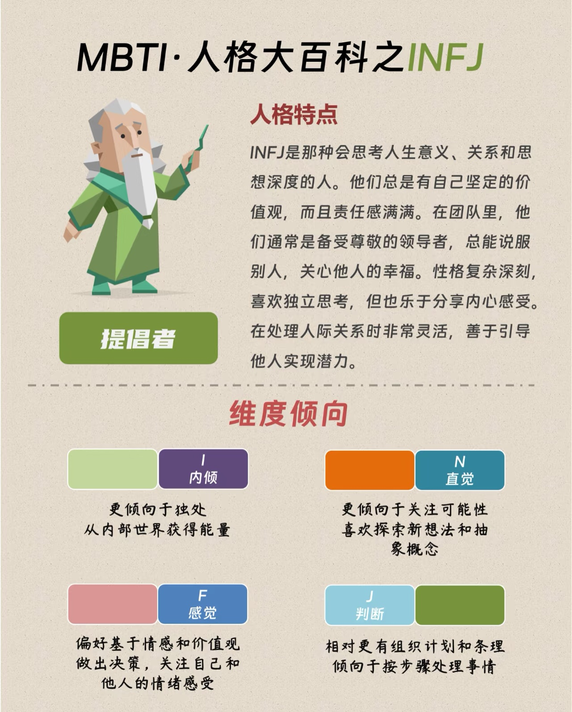

基本信息
姓名：陈钟依
专业：计算机科学与技术
邮箱：bitczy2024@qq.com
项目分工
- 构建剧情框架和具体情节
- 细化不同分支
- 撰写对话脚本
- 协助网站的搭建和网页的设计
个人简介
作为“浅度爱好者协会常任理事”，我的特长是发现乐趣，而非成为专家。我兴趣广泛，喜欢读书、画画、摄影、吉他、飞盘、各种球类运动......喜欢体验和学习新的技能和事物。
我阅读过许多科幻、悬疑类型的小说，对于光怪陆离的外太空有着自己的构想，也曾获得科幻科普作文大赛全国二等奖。这次也从之前的积累中找寻到了灵感，抓住机会再次进行了自己的创作，希望通过剧情的设置可以为这个游戏增添更多吸引力。
同时，作为一名"资深"旅游规划师，人形美食雷达，我喜欢观赏地球上不同地域的自然和人文景观，期待未来某一天雪山在我脚下，银河和极光在我头顶，世界万千美景都呈现在我眼前。
我喜欢探索生活的'广度'，但也知晓学业的'深度'钻研成就高度。在此游戏设计中，我接触到了一些之前从未了解过的技术和领域，也意识到了专业能力方面的提升空间。我深知自己如同幂函数的增长率（先缓再增）般的学习曲线，故在最初接触HTML、CSS、JS等技术时的不熟练，并不会让我气馁或放弃，而是为此挑战性而感到动力十足，通过不断积累尝试，将所学运用于此实践中，不断提升。
总之，人生不过三万天，我不愿给自己设限，而愿在没有天花板的地方，与风同频~

本人MBTI：INFJ

遇见的美丽的风景